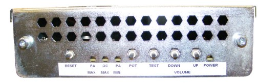
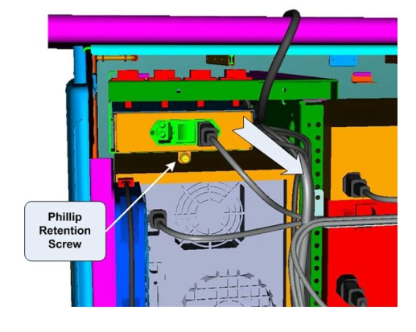
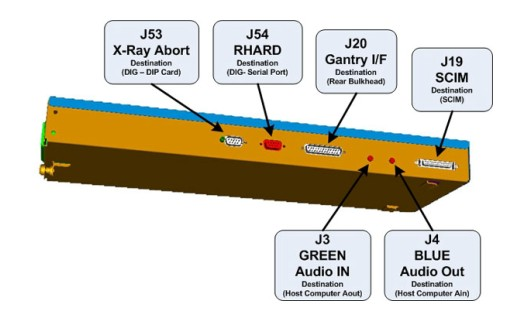
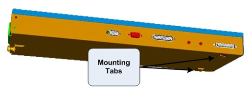

Operating Documentation
Direction 5307452-8EN, Rev# 4
Discovery CT750 HD Service Methods - Adv
Operating Documentation |
| Required Persons | Preliminary Reqs | Procedure | Finalization |
|---|---|---|---|
| 1 |
This procedure describes and illustrates the steps necessary to replace the ICOM Assembly.
| Last revised: | 05 August 2008 |
Illustration 1: ICOM Assembly

| Item | Qty | Effectivity | Part# | Manufacturer | |
|---|---|---|---|---|---|
| Standard FE Toolkit | 1 | - | - | - | |
| Phillips Screw Driver | 1 | - | - | - | |
| Item | Qty | Effectivity | Part# | Manufacturer | |
|---|---|---|---|---|---|
| ICOM Assembly | 1 | - | 5266222 | - | |
| ELECTROCUTION HAZARD | |
| HIGH VOLTAGE PRESENT | |
| USE PROPER LOCKOUT / TAGOUT PROCEDURES BEFORE REPLACING THE COMPONENTS. |
| CRUSH HAZARD | |
| ICOM ASSEMBLY IS LOCATED IN A TIGHT SERVICE ACCESS LOCATION. | |
| CAUTION NEEDS TO BE TAKEN TO PREVENT POSSIBLE PINCH POINTS WHILE REMOVING THE ASSEMBLY. |
| FOLLOW ALL REQUIRED SAFETY AND PPE PROCEDURES CUSTOMARY FOR YOUR ORGANIZATION WHEN WORKING ON THIS PRODUCT. | |
| Condition | Reference | Eff |
|---|---|---|
Access to both the front and rear of the Operator Console is required. Move the console away from walls and remove obstacles in room. | - | - |
Only trained service personnel should service the GE CT Scanner. | - | - |
Select one of the following methods to power off the Operator Console:
If applications are running, click the Shut Down icon and select Shut Down.
If applications are down, open a Unix Shell using the Toolchest.
Type: {ctuser@hostname} halt. Press <Enter>.
The Operator Console monitor will display a ‘System Halted’ message when it is acceptable to power off the Operator Console.
Power OFF the Operator Console at the front panel switch. (See Illustration 2.)
Illustration 2: Console Power Switch

Perform prescribed Lockout/Tagout procedure. For added protection, disconnect the Twist-N-Lock Main Power Cable from the rear of the console.
Remove the front and rear Operator Console Covers per prescribed cover removal procedure.
Remove the USB cables connected to the underside of the Upper Bulkhead Panel to allow removal of the ICOM Assembly.
At the rear of the console, loosen the Phillips Retention Screw holding the ICOM assembly to its support bracket.
Illustration 3: ICOM Mounting

Carefully pull the ICOM Assembly out the back of the operator console.
| NOTE: | Cables will still be attached on the side of the ICOM Assembly. Take care not to catch these cables and their connectors on the support bracket. |
Remove the power cord from the rear of the ICOM Assembly.
Remove all cable connections from the ICOM Assembly.
| NOTE: | Verify that all cables are labeled and clearly marked; if necessary, add a label for clarity. |
Now free of cables, set old ICOM Assembly aside.
Connect cables removed earlier onto the new ICOM Assembly.
Illustration 4: ICOM Assembly Connections & Destination

| NOTE: | For cabling details, refer to GOC6 Console Schematic 5212920SCH for a scalable PDF version of the schematic. |
Re-attach the power cord at the rear of the ICOM Assembly and make sure the power switch is tuned on.
Carefully slide the new ICOM Assembly back into the console from the rear side.
| NOTE: | Make sure that the ICOM Assembly mounting tabs on the bottom of the assembly catches on the support bracket. |
Illustration 5: ICOM Mounting Tabs

Tighten Phillips Retention Screw at the back of the ICOM Assembly to the support bracket.
Reconnect USB cables to the underside of the Upper Bulkhead Panel. Make sure to connect the appropriate USB cables to each of the Upper Bulkhead Panel connectors. See Console Interconnect schematic as necessary.
Reconnect the Twist-N-Lock Main Power Cable from rear of console and remove Lockout Tagout protection applied earlier.
Power ON the Operator Console at the console front panel switch.
Visually verify the ICOM Assembly Power LED is illuminated.
In order to assure proper operation of the ICOM Assembly it is necessary to perform Intercom Setup Calibrations.
Return to this procedure when finished.
After completing the ICOM Assembly Setup Procedure, perform a complete shutdown of the Operator Console and restart the system.
Refer to SCIM and ICOM Functional Checks to confirm proper operation.
Reinstall Console Front and Rear Covers.